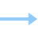

<section class="process sectionWrap" v-if="items.details">
  <div class="container-lg p-lg-0">
    <h2 class="sectionHeading" v-html="items.workflowHeading"><span>.</span></h2>
    <div class="processWrap">
        <div class="step" v-for="steps in items.details">
          
          <span>{{steps.workflowName}}</span>
          
        </div>
       <!-- <div class="step">
        
        <span>Design</span>
        
      </div>
      <div class="step">
        
        <span>Development</span>
        
      </div>
      <div class="step">
        
        <span>Testing</span>
        
      </div>
      <div class="step">
        
        <span>Deployment</span>
        
      </div>
      <div class="step">
        
        <span>Support and Maintenance</span>
      </div> -->
    </div>
  </div>
</section>

